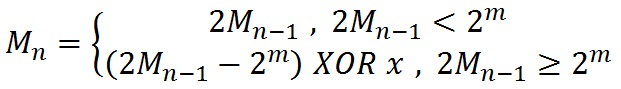

露露、花花和萱萱最近对计算机中的随机数产生了兴趣。为大家所熟知的是，有计算机生成的随机数序列并非真正的随机数，
而是由一定法则生成的伪随机数。
某一天，露露了解了一种生成随机数的方法，成为Mersenne twister。给定初始参数m∈Z+，x∈Z+∩[0,2m)和初值M0∈Z+∩[0,2m)，
它通过下列递推式构造伪随机数列{Mn}:

其中XOR是二进制异或运算（C/C++中的^运算）。而参数x的选取若使得该数列在长度趋于无穷时，近似等概率地在Z+∩(0,2m)中取值，
就称x为好的。例如，在m>1时x=0就显然不是好的。
在露露向伙伴们介绍了Mersenne twister之后，花花想用这一些经典的随机性测试来检验它的随机性强度。为此，花花使用计算机计算
了一些Mk。
但细心的萱萱注意到，花花在某次使用二进制输入k时，在末尾多输入了l个0,。她正想告诉花花这个疏忽，然而花花已经计算并记录了
错误的Mk而没有记录k的值。虽然这其实不是什么致命的问题，但是在萱萱告诉花花她这个疏漏时，作为完美主义者的花花还是恳求萱萱
帮她修正Mk的值。萱萱便把这个任务交给了她的AI——你。